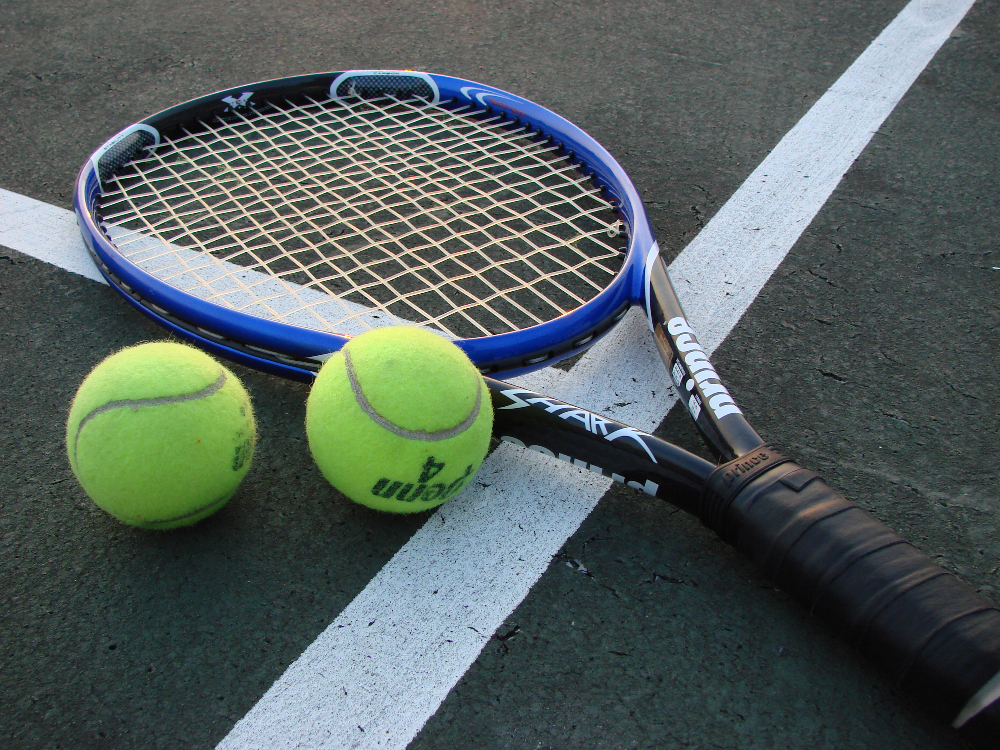

Прообраз тенниса возник в XII–XIII веках во Франции. Монахи перекидывали друг другу мяч через верёвку, натянутую поперёк двора, ударяя по нему ладонью. От французского la paume («ладонь») пошло название игры — «же-де-пом» (jeu de paume). Затем к руке стали приспосабливать перчатку, позже — деревянную биту, а затем ракетку со струнами.
К XVI веку сформировался «реальный теннис» (real tennis) — игра в закрытых помещениях со сложной разметкой, асимметричными стенами и системой подсчёта очков 15, 30, 40, гейм. Слово «теннис» могло произойти от французского tenez («держите!») — предупреждения о подаче. Генрих VIII построил корты в своих дворцах. К XVIII веку «реальный теннис» угас: он был слишком дорогим и сложным.
В 1873 году майор Уолтер Клоптон Уингфилд разработал правила игры на открытом воздухе — «сферистики»: прямоугольный корт, сетка посередине, мяч, перекидываемый ракеткой. Год спустя правила опубликовали, игра получила название «лаун-теннис». В 1877 году прошёл первый турнир в Уимблдоне, организованный Всеанглийским клубом крокета и лаун-тенниса; победил Спенсер Гор. Правила Уимблдона опирались на разработки Уингфилда, но вскоре были доработаны: установлена высота сетки, изменены размеры корта, подача стала выполняться сверху.
В 1881 году основан Национальный теннисный союз США. В 1900 году Дуайт Дэвис учредил Кубок Дэвиса. В 1913 году создана Международная федерация лаун-тенниса (ныне ITF), установившая единые правила. Женский теннис развивался параллельно: в 1884 году на Уимблдоне прошёл первый женский турнир, а в 1919 году на корты вышла Сюзанн Ленглен, чья форма и стиль игры привлекли к женскому теннису большое внимание.
До 1968 года теннис оставался любительским: участники турниров Большого шлема формально не получали денег за игру. В 1968 году произошёл «Открытый перелом» (Open Era) — к соревнованиям допустили профессионалов. Теннис стал коммерчески успешным и глобальным. В 1970-е годы сложилось соперничество Бьорна Борга и Джона Макинроя, блистали Мартина Навратилова и Крис Эверт. В 1980–90-х — Иван Лендл, Штеффи Граф, Моника Селеш, Пит Сампрас, Андре Агасси.
В XXI веке выступали Роджер Федерер, Рафаэль Надаль, Новак Джокович и Серена Уильямс. Появились Hawk-Eye для определения места падения мяча, электронная система подачи, аналитика данных. Сегодня теннис — это турниры Большого шлема (Australian Open, «Ролан Гаррос», Уимблдон, US Open), Кубок Дэвиса и Кубок Билли Джин Кинг, Олимпийские игры и турниры ATP и WTA.
